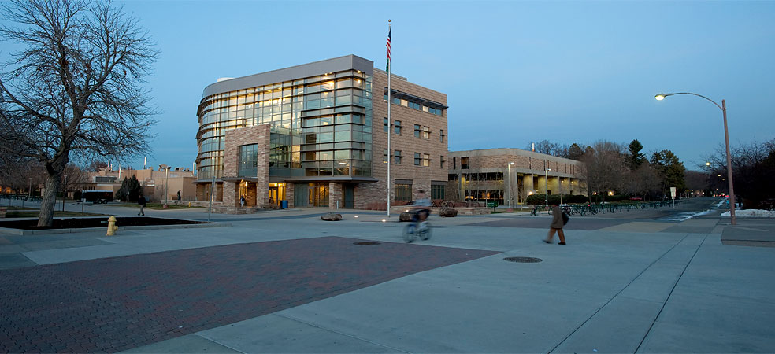

Call for Papers: Modularity '15 Research Results track
Modularity '15
March 16-19, 2015
Fort Collins, Colorado, USA

(The Computer Science building at Colorado State University in Fort Collins, Colorado.)
First round due date: August 4, 2014.
Second round due date: October 10, 2014.
Modularity is a key property for scalability of software processes, including debugging, maintenance, reasoning, and testing. Modularity influences system diversity, dependability, performance, evolution, the structure and the dynamics of the organizations that produce systems, human understanding and management of systems, and ultimately system value. Yet the nature of and possibilities for modularity, limits to modularity, the mechanisms needed to achieve it in given forms, and its costs, benefits, and tradeoffs remain poorly understood. Significant advances in modularity thus are possible and promise to yield breakthroughs in our ability to conceive, design, develop, validate, integrate, and evolve modern information systems and their underlying software artifacts.
Modularity at the semantic as well as the syntactic level is a key enabler for the expression of high quality software systems. One of the most important techniques for complexity reduction is abstraction. Novel concepts and abstraction mechanisms, including but not limited to aspect-oriented techniques, are a focus point for improvements in the support for modularity. The scope of this effort covers all perspectives on software systems in all their life-cycle phases, for instance application domain analysis, programming language constructs, formal proofs of system properties, program state visualization in debuggers, performance improvements in compiler algorithms, etc. As the premier international conference on modularity, Modularity'15 continues to advance our understanding of these issues and the expressive power of known techniques.
The Modularity'15 conference invites full, scholarly papers of the highest quality on new ideas and results. Papers are expected to contribute significant new research results with rigorous and substantial validation of specific technical claims, based on scientifically sound reflections on experience, analysis, experimentation, or formal models. Compelling new ideas are especially welcome, which means that the requirements in the areas of validation and maturity are higher for papers that contribute more incremental results.
Modularity'15 is deeply committed to publishing works of the highest caliber. To this aim, two separate paper submission deadlines and review stages are offered. A paper accepted in any round will be published in the proceedings and presented at the conference. Promising papers submitted in the first round that are not accepted may be invited to be revised and resubmitted for review by the same reviewers in the second round. Authors of such invited resubmissions are asked to also submit a letter explaining the revisions made to the paper to address the reviewers' concerns. While there is no guarantee that an invited resubmission will be accepted, this procedure (similar to major revisions requested by journals) is designed to help authors of promising work get their papers into the conference. Submission to both rounds is open for all, and authors who submit to the first round may of course choose to resubmit a revised version in the second round without such an invitation, in which case new reviewers may be appointed. Finally, the same paper cannot be simultaneously submitted to other conferences or journals. In case of doubt, please contact the Program Chair.
Research Topics
Modularity'15 is looking for papers in all areas of software modularity. Topics of interest include, but are not limited to, the following:
- Varieties of modularity. Context orientation; feature orientation; generative programming; aspect orientation; software product lines; traits; families of classes; meta-programming and reflection; components; view-based development.
- Programming languages. Support for modular abstraction in: language design; verification, specification, and static program analysis; compilation, interpretation, and runtime support; formal languages and calculi; execution environments and dynamic weaving; dynamic languages; domain-specific languages.
- Software design and engineering. Requirements and domain engineering; architecture; synthesis; evolution; metrics and evaluation; empirical studies of existing software; economics; testing and verification; semantics; composition and interference; traceability; methodologies; patterns.
- Tools. Crosscutting views; refactoring; evolution and reverse engineering; aspect mining; support for new language constructs.
- Applications. Data-intensive computing; distributed and concurrent systems; middleware; service- oriented computing systems; cyber-physical systems; networking; cloud computing; pervasive computing; runtime verification; computer systems performance; system health monitoring; enforcement of non-functional properties.
- Complex systems. Works that explore and establish connections across disciplinary boundaries, bridging to such areas as biology, economics, education, infrastructure such as buildings or transport systems, and more.
- Composition. Component-based software engineering; Composition and adaptation techniques; Composition algebras, calculi, and type systems; Model-driven composition; Dynamic composition and reconfiguration; Large-scale component-based systems; Cloud, service-oriented architectures; Business process orchestration; Visual composition environments; Performance optimization of composite systems.
Important Dates
- First round:
Submission: August 4, 2014 (23:59 Baker Island / UTC-12)
Notification: September 14, 2014
- Second round:
Submission: October 10, 2014 (23:59 Baker Island / UTC-12)
Notification: December 7, 2014
- Camera ready: February 15, 2015
Submission Guidelines
Modularity'15 is deeply committed to eliciting works of the highest caliber. To this aim, two separate paper submission deadlines and review stages are offered. A paper accepted in any round will be published in the proceedings and presented at the conference. Promising papers submitted in the first round that are not accepted may be invited to be revised and resubmitted for review by the same reviewers in the second round. Authors of such invited resubmissions are asked to also submit a letter explaining the revisions made to the paper to address the reviewers' concerns. While there is no guarantee that an invited resubmission will be accepted, this procedure (similar to major revisions requested by journals) is designed to help authors of promising work get their papers into the conference. Submission to both rounds is open for all, and authors who submit to the first round may of course choose to resubmit a revised version in the second round without such an invitation, in which case new reviewers may be appointed. Finally, the same paper cannot be simultaneously submitted to other conferences or journals. In case of doubt, please get in touch with the Program Chair.
All submissions must conform to both the ACM Policy on Prior Publication and Simultaneous Submissions and the SIGPLAN Republication Policy.
Papers are to be submitted electronically to CyberChair.
Please use http://cyberchairpro.borbala.net/modularitypapers/submit/ to submit your paper. Submissions should use the SIGPLAN Proceedings Format using 9 point font. Please include page numbers in your submission as this will be helpful for the reviewers and also for you when reading their reviews. (If your submission is written using LaTeX, please set the preprint option in the LaTeX \documentclass command to generate page numbers.) Please also ensure that your submission is legible when printed on a black and white printer. In particular, please check that colors remain distinct and font sizes are legible.
To ensure that papers stay focused on their core contributions, the main part of the paper should be no longer than 12 pages. There is a 4 page limit for references and appendices, and, therefore, for the overall submission must be less than 16 pages. If the paper is accepted, the final submission will be limited to 16 pages, including references and appendices. However, it is the responsibility of the authors to keep the reviewers interested and motivated to read their submission. Reviewers are under no obligation to read all or even a substantial portion of a paper if they do not find the initial part of the paper compelling. The committee will not accept a paper if it is unclear that the paper will fit in the Modularity'15 Proceedings.
All submitted papers are peer-reviewed. Accepted papers from all tracks will appear in the Modularity'15 Proceedings in the ACM Digital Library. Submissions will be judged on the potential impact of the ideas and the quality of the presentation.
Program Committee Chair
Gary T. Leavens, University of Central Florida, USA (leavens@cs.ucf.edu)
Program Committee
Don Batory, University of Texas at Austin
Eric Bodden, Fraunhofer SIT and TU Darmstadt
Paulo Borba, Federal University of Pernambuco
Walter Cazzola, Università degli Studi di Milano
Cynthia Disenfeld, Technion -- Israel Institute of Technology
Robert Dyer, Bowling Green State University
Erik Ernst, Aarhus University
Matthew Flatt, University of Utah
Michael Haupt, Oracle Labs
Marieke Huisman, University of Twente
Cristina Lopes, University of California Irvine
Tiziana Margaria, University of Potsdam
Linda Northrop, Software Engineering Institute
Nate Nystrom, University of Lugano
Bruno C. d. S. Oliveira, The University of Hong Kong
Awais Rashid, Lancaster University
Henrique Rebêlo, Federal University of Pernambuco
Martin Rinard, Massachusetts Institute of Technology
Norbert Siegmund, University of Passau
Murali Sitaraman, Clemson University
Kevin Sullivan, University of Virginia
External Review Committee
Marsha Chechik, University of Toronto
Steven Edwards, Virginia Tech.
Dan Grossman, University of Washington
Görel Hedin, Lund University
Mira Mezini, TU Darmstadt
Peter Müller, ETH Zurich
Hridesh Rajan, Iowa State University
Clemens Szyperski, Microsoft Research
Éric Tanter, University of Chile
Eelco Visser, Delft University of Technology
For additional information, clarification, or answers to questions please contact the Program Committee Chair.